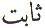
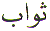
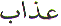
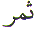
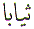

The Arabic Letter
Sa ( ) is the 4th Letter in the normal
Arabic character set. In the numerical character set, Abjad, Sa
(
) is the 4th Letter in the normal
Arabic character set. In the numerical character set, Abjad, Sa
( ) has the value of 500. The position
of the Letter Sa (
) has the value of 500. The position
of the Letter Sa ( ) in the Abjad format
is 23. This article is about the spiritual meaning of the Letter
Sa (
) in the Abjad format
is 23. This article is about the spiritual meaning of the Letter
Sa ( ).
).
The Letter Sa ( ) is for stability, firmness or strength.
The Letter Sa (
) is for stability, firmness or strength.
The Letter Sa ( ) is also for reward
and fruit.
) is also for reward
and fruit.
Sabit is Firmness. Sabit is Stability. Only
Sabit - Stable 'things' exist until they are destroyed
by force. Unstable 'things' perish due to their weaknesses or
infirmity. Firmness in the Belief in Allah is directly proportional
to Iman - Faith. Those with Sabit Iman - Firm Belief
are the basis for stability. By the same reasoning, those with
no Iman - Faith in Allah are unstable. Then there are those who
are in between the two extremes. Let us take an example from the
Quran. We will start with the above reference (Chapter 14, Verse
27). Since the above reference is from the chapter named after
Ibraheem ( ) we need to look
at other facts about Ibraheem (
) we need to look
at other facts about Ibraheem ( ).
).
Just before the above
incident took place, Jibreel ( ) came
to Ibraheem (
) came
to Ibraheem ( ) and asked him,
if he wanted assistance. Ibraheem (
) and asked him,
if he wanted assistance. Ibraheem ( )
refused, saying that his Rabb (Rabb) knows the condition that
he is in. Why did Ibraheem (
)
refused, saying that his Rabb (Rabb) knows the condition that
he is in. Why did Ibraheem ( ) refuse
Jibreel's (
) refuse
Jibreel's ( ) help ? Because
he is one who is Sabit - Firm
in his belief in Allah. Knowing full well that Allah would not
allow his Khalil (Friend) to be harmed in any way. So Allah commanded
the fire to become cool and safe for Ibraheem (
) help ? Because
he is one who is Sabit - Firm
in his belief in Allah. Knowing full well that Allah would not
allow his Khalil (Friend) to be harmed in any way. So Allah commanded
the fire to become cool and safe for Ibraheem ( ).
Now let us look at a Hadees about Ibraheem (
).
Now let us look at a Hadees about Ibraheem ( )
:
)
:
At first glance the above
Hadees is fairly straight forward. The Kaaba has been built short
of the original Kaaba in size and foundation that was built by
Ibraheem ( ) and his son Ismaeel
(
) and his son Ismaeel
( ). But if we look again at the
above Hadees with respect to the Quran reference above. The meaning
of the above Hadees changes. What Muhammad
). But if we look again at the
above Hadees with respect to the Quran reference above. The meaning
of the above Hadees changes. What Muhammad  meant,
is that the Iman, belief, FOUNDATION, conviction, firmness, determination
in Allah, with which Ibraheem (
meant,
is that the Iman, belief, FOUNDATION, conviction, firmness, determination
in Allah, with which Ibraheem ( ) built
the Kaaba was far superior to the Iman - foundation of the those
who had recently given up infidelity. How could those folk who
recently gave up infidelity even come close to building the Kaaba
ON ALL THE FOUNDATIONS OF IBRAHEEM (
) built
the Kaaba was far superior to the Iman - foundation of the those
who had recently given up infidelity. How could those folk who
recently gave up infidelity even come close to building the Kaaba
ON ALL THE FOUNDATIONS OF IBRAHEEM ( )
?
)
?
Sawab is Reward. For every good deed there is a Sawab Reward. For every evil deed there is an Aazab - Punishment.
What exactly is Sawab - Reward in the
next world ? For a Muslim believer the best reward is the Samar( )
- Fruit of Wood
)
- Fruit of Wood (
( ) Love from Allah (
) Love from Allah ( )
to his creation (
)
to his creation ( ). An example of
one of the rewards is given here :
). An example of
one of the rewards is given here :
The important point to
notice in the above verse is Green
Garments. This can be
understood literally. On the other hand, if we remember  Khidr (
Khidr ( ),
is he not known as Khidr (
),
is he not known as Khidr ( ) because
of the colour GREEN ? What was his reward ?
) because
of the colour GREEN ? What was his reward ?
What more could any one ask for ? We all seek Allah's Mercy. That Mercy is bestowed by Allah as a reward. And if we are taught Knowledge from His own presence, that is the best reward. Even a teacher who has learnt from Allah's presence will do. Because knowledge is a very powerful thing. What can be better than having Allah's Mercy and Knowledge as reward ?
The word Siyaba in the above Verse
31 can be interpreted as a Garment. Or it can be interpreted as
Samar ( ) - Reward of Knowledge
(
) - Reward of Knowledge
( ) from Allah (
) from Allah ( )
to His creation (
)
to His creation ( ) from His (
) from His ( ) presence. Why do we wear garments ? To cover
our nakedness. We wear garments to preserve our dignity and honour.
Therefore to receive a garment from Allah is a form of honour
bestowed by Allah on His servant.
) presence. Why do we wear garments ? To cover
our nakedness. We wear garments to preserve our dignity and honour.
Therefore to receive a garment from Allah is a form of honour
bestowed by Allah on His servant.
Coming back to building
the Kaaba on all the FOUNDATIONS of Ibraheem ( ).
Muhammad
).
Muhammad could have built the Kaaba by
himself on all the foundations of Ibraheem (
could have built the Kaaba by
himself on all the foundations of Ibraheem ( ).
But how could he deprive others of the Sawab
- Reward ? How could he tell the
folks who had recently given up idol worshipping that their foundation
was not the same as Ibraheem's (
).
But how could he deprive others of the Sawab
- Reward ? How could he tell the
folks who had recently given up idol worshipping that their foundation
was not the same as Ibraheem's ( ) Sabit - Firm foundation
?
) Sabit - Firm foundation
?
Muhammad  was in the habit of giving and
distributing goodness to the people, not holding back the Sawab - Reward from others.
was in the habit of giving and
distributing goodness to the people, not holding back the Sawab - Reward from others.
May Allah make all of
us Sabit - Firmly
fixed with all the foundations of Ibraheem ( )
and all the foundations of Allah's Beloved Muhammad
)
and all the foundations of Allah's Beloved Muhammad  .
Ameen.
.
Ameen.
| BACK |